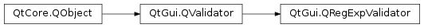

QRegExpValidator¶
Detailed Description¶
The
PySide2.QtGui.QRegExpValidatorclass is used to check a string against a regular expression.
PySide2.QtGui.QRegExpValidatoruses a regular expression (regexp) to determine whether an input string isAcceptable,Intermediate, orInvalid. The regexp can either be supplied when thePySide2.QtGui.QRegExpValidatoris constructed, or at a later time.When
PySide2.QtGui.QRegExpValidatordetermines whether a string isAcceptableor not, the regexp is treated as if it begins with the start of string assertion (^ ) and ends with the end of string assertion ($ ); the match is against the entire input string, or from the given position if a start position greater than zero is given.If a string is a prefix of an
Acceptablestring, it is consideredIntermediate. For example, “” and “A” areIntermediatefor the regexp [A-Z][0-9] (whereas “_” would beInvalid).For a brief introduction to Qt’s regexp engine, see
PySide2.QtCore.QRegExp.Example of use:
# regexp: optional '-' followed by between 1 and 3 digits rx = QRegExp("-?\\d{1,3}") validator = QRegExpValidator(rx, self) edit = QLineEdit(self) edit.setValidator(validator)Below we present some examples of validators. In practice they would normally be associated with a widget as in the example above.
# integers 1 to 9999 rx = QRegExp("[1-9]\\d{0,3}") # the validator treats the regexp as "^[1-9]\\d{0,3}$" v = QRegExpValidator(rx, 0) pos = 0 s = "0" v.validate(s, pos) # returns Invalid s = "12345" v.validate(s, pos) # returns Invalid s = "1" v.validate(s, pos) # returns Acceptable rx.setPattern("\\S+") # one or more non-whitespace characters v.setRegExp(rx) s = "myfile.txt" v.validate(s, pos) # Returns Acceptable s = "my file.txt" v.validate(s, pos) # Returns Invalid # A, B or C followed by exactly five digits followed by W, X, Y or Z rx.setPattern("[A-C]\\d{5}[W-Z]") v.setRegExp(rx) s = "a12345Z" v.validate(s, pos) # Returns Invalid s = "A12345Z" v.validate(s, pos) # Returns Acceptable s = "B12" v.validate(s, pos) # Returns Intermediate # match most 'readme' files rx.setPattern("read\\S?me(\.(txt|asc|1st))?") rx.setCaseSensitive(false) v.setRegExp(rx) s = "readme" v.validate(s, pos) # Returns Acceptable s = "README.1ST" v.validate(s, pos) # Returns Acceptable s = "read me.txt" v.validate(s, pos) # Returns Invalid s = "readm" v.validate(s, pos) # Returns IntermediateSee also
PySide2.QtCore.QRegExpPySide2.QtGui.QIntValidatorPySide2.QtGui.QDoubleValidatorSettings Editor Example
-
class
PySide2.QtGui.QRegExpValidator([parent=nullptr])¶ -
class
PySide2.QtGui.QRegExpValidator(rx[, parent=nullptr]) Parameters: - rx –
PySide2.QtCore.QRegExp - parent –
PySide2.QtCore.QObject
Constructs a validator with a
parentobject that accepts any string (including an empty one) as valid.Constructs a validator with a
parentobject that accepts all strings that match the regular expressionrx.The match is made against the entire string; e.g. if the regexp is [A-Fa-f0-9]+ it will be treated as ^[A-Fa-f0-9]+$ .
- rx –
-
PySide2.QtGui.QRegExpValidator.regExp()¶ Return type: PySide2.QtCore.QRegExp
-
PySide2.QtGui.QRegExpValidator.regExpChanged(regExp)¶ Parameters: regExp – PySide2.QtCore.QRegExp
-
PySide2.QtGui.QRegExpValidator.setRegExp(rx)¶ Parameters: rx – PySide2.QtCore.QRegExp
© 2018 The Qt Company Ltd. Documentation contributions included herein are the copyrights of their respective owners. The documentation provided herein is licensed under the terms of the GNU Free Documentation License version 1.3 as published by the Free Software Foundation. Qt and respective logos are trademarks of The Qt Company Ltd. in Finland and/or other countries worldwide. All other trademarks are property of their respective owners.